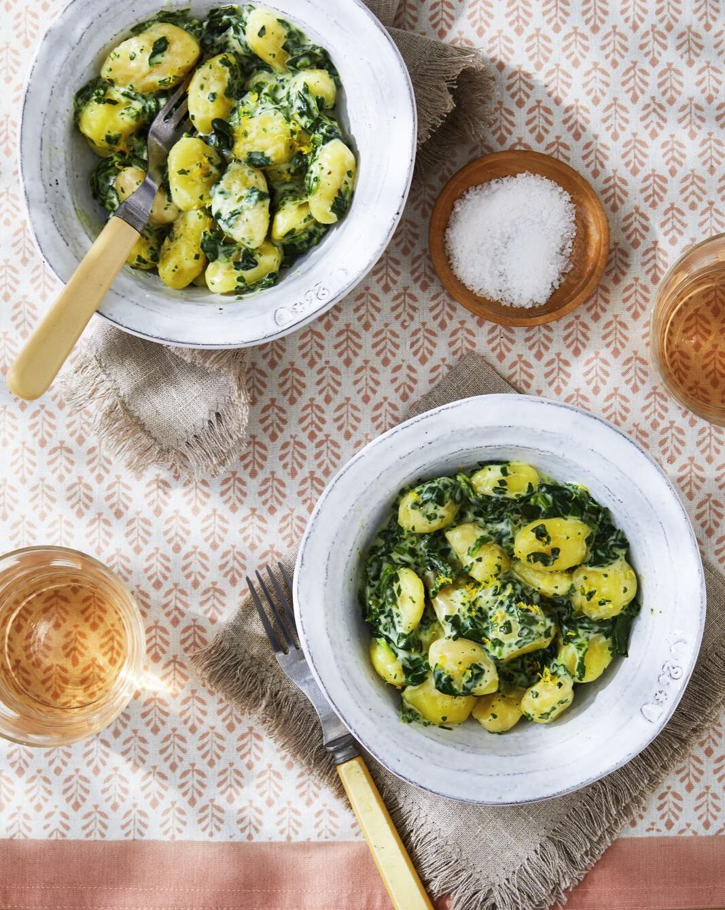

Gnocchi with Creamed Spinach

Ingredients
- Kosher salt and freshly ground black pepper
- 1 (19-ounce) package shelf-stable gnocchi
- 1 (9-ounce) package frozen cream of spinach, defrosted
- 1/2 c. heavy cream
- 2 oz. Parmesan, grated (about 1/2 cup)
- 1/8 tsp. freshly grated nutmeg
- Lemon zest, for garnish
Directions
- In a large pot of salted water, cook gnocchi according to package directions.
- Meanwhile, cook cream of spinach and cream in a large, nonstick skillet over medium heat until warm and thickened, 3 to 4 minutes. Season with salt and pepper. Add Parmesan, nutmeg, and gnocchi, and stir to coat. Serve garnished with lemon zest.
return